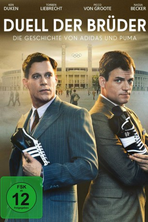

gesehen am 02.11.2016
gesehen am 02.11.2016Alternativ: Duell der Brüder - Die Geschichte von Adidas und Puma gesehen am 02.11.2016
 
 IMDB-Wertung: 6.7 / 10
IMDB-Wertung: 6.7 / 10  Metascore:
Metascore: 
Anfang der 20er Jahre bauen die zwei Brüder Adolf und Rudolf Dassler eine kleine Schuhmanufaktur im fränkischen Herzogenaurach auf. Der Beginn einer unglaublichen Erfolgsgeschichte: Durch die perfekte Zusammenarbeit des Tüftlers Adi und des Verkaufstalents Rudi entsteht schnell ein florierender Betrieb, der mit seinen Sportschuhen die besten Sportler der Welt ausrüstet. Doch der kometenhafte Aufstieg wird getrübt durch wachsende Spannungen, die durch die Nazi-Herrschaft und den Zweiten Weltkrieg, der die Produktion fast zum Erliegen bringt, noch verschärft werden. Auch die Ehefrauen der Brüder werden unweigerlich in den Strudel aus Machtkämpfen, Misstrauen und Verrat hineingezogen. Obwohl das Geschäft nach Kriegsende wieder anzieht, kommt es 1948 schließlich zur Aufspaltung: Aus Dassler's Schuhfabrik werden ADIDAS und PUMA - und aus den Brüdern endgültig erbitterte Konkurrenten.
Jahr: 2016
Dauer: 111 Minuten
FSK:
Land: Deutschland Studio: RTLTonspuren:
Untertitel:
Auflösung: 1080p (1920x1080) Größe: 6144 MB
Genre: Biographie, Drama, Geschichte
Regisseur: Oliver Dommenget
Drehbuch: Jacques Vilfrid
Soundtrack:
Darsteller:
 Florian Bartholomäi als
Florian Bartholomäi als  Ken Duken als Adi Dassler
Ken Duken als Adi Dassler Torben Liebrecht als Rudi Dassler
Torben Liebrecht als Rudi Dassler Patrick Simons als Mitarbeiter Puma
Patrick Simons als Mitarbeiter PumaDatei: X:\2016(A-F)\Duell der Brüder - Die Geschichte von Adidas und Puma (2016, FSK, 1920x1080).mkv seit 11.10.2016
Festplatte: HD 2016(A-Z)
 Es gibt insgesamt 147 Filme in der Gruppe '2016(A-F)'
Es gibt insgesamt 147 Filme in der Gruppe '2016(A-F)'